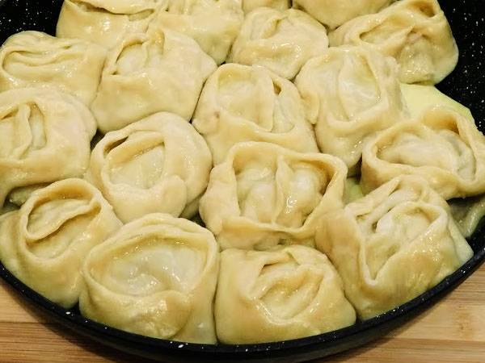
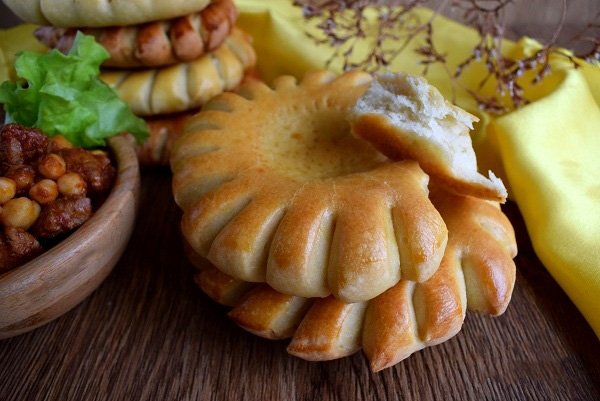
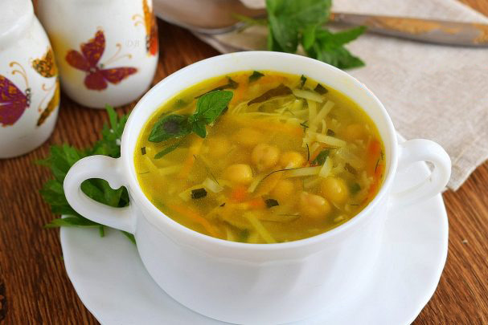
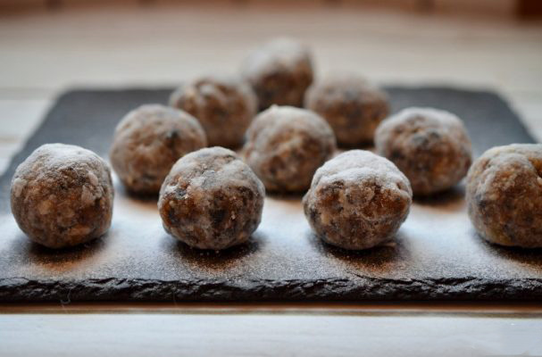

×

Tajikistan
____
Традиционная еда
Манты — традиционное, преимущественно мясное блюдо, народов Центральной Азии, Турции, Монголии, Кореи («манду́» (кор. 만두?, 饅頭?), Татарстана, Башкортостана, Крыма[3], Киргизии, Казахстана, Узбекистана и в Китае состоящее из мелко нарубленного мяса в тонко раскатанном тесте, приготовленное на пару в мантоварке (манты́-каскане/манты-казане).

Кульча — Эту традиционную таджикскую хлебную лепешку едят с первым горячим или с чаем/молоком и взбитым со сливочным маслом и медом. Кульча получается вкусной, с нежным пушистым мякишем, долго не черствеет.

Оши бурида — Есть в таджикской кухне замечательный суп из бараньего гороха с домашней лапшой. Ароматный, вкусный и сытный. Можно приготовить вегетарианский вариант на воде, а можно и на мясном бульоне. Попробуйте!

Янчминш — Блюдо Таджикской кухни. Несмотря на необычное название, это обычные колобки к чаю из орехов и сухофруктов. Это отличное лакомство очень понравится и взрослым, и детям. Подойдёт для чаепития в пост.

____